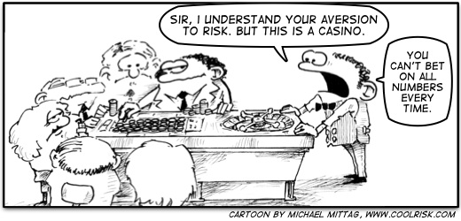
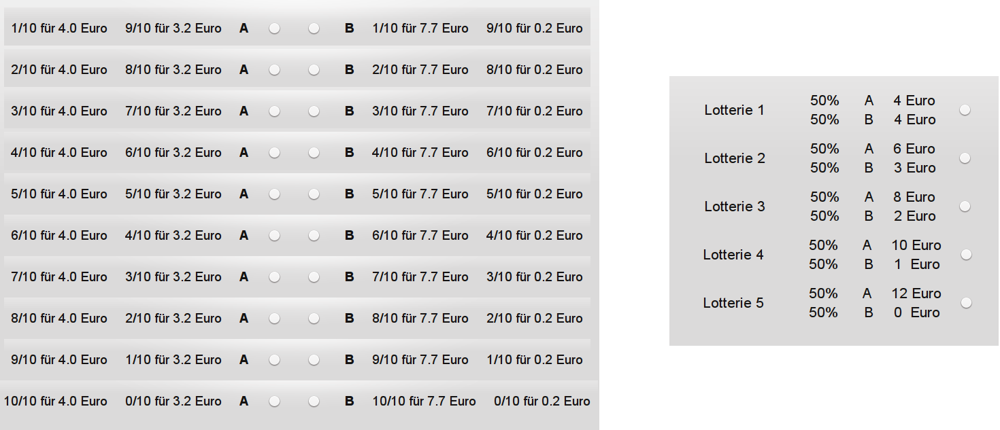
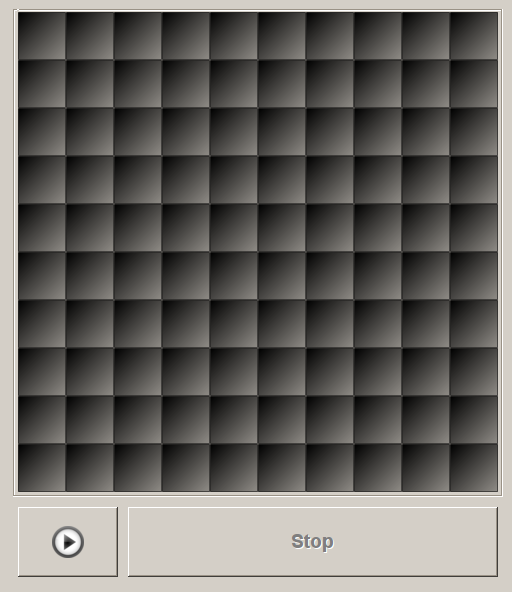
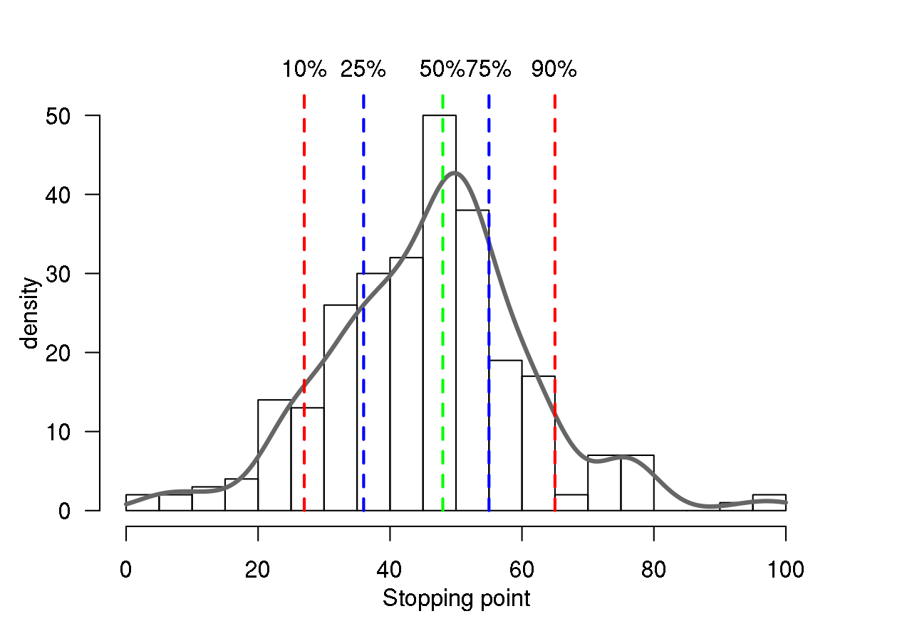

Introducing the Bomb Risk Elicitation Task
This post introduces the BRET paper by Paolo Crosetto and Antonio Filippin. Download it on SSRN!
When investigating issues in experimental economics we need to be able to control for those characteristics of the subjects that can affect the results. One of the traits we usually try to control for is the attitude of people towards risk. We know from everyday experience that people can differ wildly in their willingness to take risks: some people hide money under a mattress, others invest in start-ups or in high-risk bonds. Risk-aversion or risk-seeking can vastly influence behavior, in non trivial ways; so in economics many tools have been developed to try and elicit our subjects’ attitudes towards risk.

More or less all the tasks used in economics involve choices among lotteries. Do people prefer a sure amount of 5 € to a coin toss yielding 15 € if tails, 0 € if heads? By using batteries of questions like these, we can try and find the tipping point, the lottery that makes people indifferent. A very risky lottery, most people would reject; a very low risk – high gain lottery, most people would accept; which exact level of returns on risk makes people willing to accept a bet, that’s what we are after.
The current methods are all very cleverly designed. The point of each task is to get the finest possible estimate of the individual risk attitudes, with the lowest possible number of choices, and using a task that is easily understandable by our subjects. One classic task was developed by Holt and Laury, who built on a long tradition of lottery tasks. It involves ten pairwise choices between two lotteries. It’s neat theoretically, but it is not so easy to understand (have a look at one implementation of their task in the image below); it requires 10 choices to estimate risk attitudes, and it gives just a not-so-fine-grained estimate, as it pools subjects in 8 categories.

Other tasks can do better than that. A task developed by Eckel and Grossman uses only one choice among five lotteries, and it turns out to be much easier to understand (have a look above). But simplicity has a cost, as now subjects can be pooled in just 5 categories, and risk-loving preferences are not captured by the task. A feature shared also by an investment task developed by Charness and Gneezy: subjects are given 10 $, and asked to divide this amount between a safe option – you keep all the money dumped there – and a risky option – you stand a 50% chance of getting 2.5 times what you invested, and a 50% chance of zero. The task can be very easily understood, it requires only one choice, and generates as many categories as you possibly want. But again, no risk loving can be captured, and, what is more important, the task confounds risk attitudes with loss attitudes – you can lose money with respect to what has been given to you and this, at least according to Prospect Theory, makes a big difference.
So, no task is perfect, and some have some major problems. Me and Antonio Filippin, my coauthor, we tried to solve some of these problems.
What we wanted to do was to create a task that would improve upon the existing ones. We wanted it simple, able to give a fine-grained estimate with few (possibly one) question, possibly not hinging upon underlying mathematical skills. We wanted it free from consideration of losses. SO we looked around, and found that a simple, intuitive task giving a very fine-grained estmation exists: it’s the Balloon Analog Risk Task (BART: paper, applet), developed by Lejeuz et al. Subjects see an inflatable balloon on the screen, and they can pump air into it — for every pumping, they get a positive amount of money; at some point the balloon is bound to burst – and in that case the subjects get zero. The task is very intuitive, but it has two main problems: the bursting of the balloon truncates the data – i.e. we cannot identify properly subjects whose preferences are to stop after the bursting point – and it features ambiguity: probabilities are not clearly visualised, as it s hard to keep track of the pumps and to see how big the balloon has become w.r.t. to its maximum size.
So we thought of improving on the BART – by making probabilities easy to infer from the visual representation, and by eliminating the truncation of the data. What we came up with is the ‘Bomb Risk Elicitation Task’ (BRET).

The BRET is pretty simple. You see a square composed of 100 boxes: it reminds one of minesweeper. And indeed, within one of those boxes there is a mine, well, a time bomb. You do not know where the bomb hides. The PC, at a predetermined speed, collects boxes for you, in a predetermined order. For each box that is collected, you gain money. But you also increase the likelihood of collecting the time bomb – if it explodes you get (you guessed it) zero. Your task is to stop the collection process – to choose how many boxes to collect. The more you collect, the more you accumulate money, but the more you increase the likelihood of collecting the bomb. We need a time bomb, and not a live explosion, to avoid truncation of the data. In the BRET, one can as well go ahead and collect all 100 boxes. Its money counter would then show a nice amount of money, that would unfortunately be lost for sure. If he collects 90 boxes, a subject faces a only a 10% chance of getting them; if 30, a 70% chance.
The task is easy, it allows for a clear visual representation of probabilities and of the collection process. It is also simple, as the subjects need to take only one decision – to hit the ‘stop’ button. Out of this decision, we can lump subjects into 100 different categories – one for each stopping point – that is way more than 8 or 5 from previous tasks. Moreover, there is no loss involved – as there is no reference point to start with, no clause ‘you have 10 $, how much do you… ?’. The task needs 4 lines to be explained, in the basic version 100 seconds to be run, and gives a pretty detailed estimate of the willingness to take risks. The BRET improves on the Balloon as probabilities are clearly visible, we can measure any preference on the set, and we do not need repetitions – thus eliminating possible serial correlation in the data (‘I stop at 60 niw, since I have stopped at 35 earlier and it did work…’). Moreover, just one decision is done – one click – and fatigue or loss of control from the subjects is ruled out.
We proposed the task to 1110 persons in our Lab at the Max Planck Institute for Economics in Jena, to gather some statistics and see how it fared with respect to the above tasks, and to known stylized facts of risk aversion in the population. And the findings are quite surprising.
First, as expected, on average the subjects are slightly risk averse. That is, they stop on average after 46.5 boxes have been collected – if they were risk-neutral, they would stop at 50. The bulk of subjects recorded moderate choices – 80% of the people lie between 26 and 65 boxes collected – which makes a lot of sense. In general, 51% of the subjects are risk-averse (they stop before 50), 14% risk neutral (they stop exactly at 50), and 35% risk loving (they stop after 50). These results represent a novelty, as previous studies found most of the people being risk averse, and only less than 20% of the sample showing some risk loving, if at all. After all, that was the ground for the exclusion of risk loving from some of the existing tasks: it was so rarely observed, and if so only slightly, that it made sense to concentrate on the degree of risk aversion, assuming all subjects would be risk averse, or, at a limit, risk neutral. About why is that the case, for us to have so many (slightly) risk loving subjects, we have some clues – and they have once again to do with loss aversion.

Second, we see no gender difference in risk attitudes. This was quite striking, at first. There is widespread evidence that females are less willing than males to take risks. Even though the evidence is not conclusive – many studies did not find any difference – it is true that this has been taken as a fact by many. Indeed, it is true that self-reported measures of risk aversion show a significant gender difference. Morevoer, what is even more puzzling, this gender difference appears in our data as well: the very same 1110 subjects, when asked to report how much do they perceive themselves to be adverse to risks, using the question of the German household panel (SOEP), report answers that show a clear gender gap. What’s going on here?
The answer to the gender puzzle turns out to have again to do with losses. Loss aversion and risk aversion are two very different things. They are technically different, for starters. But also intuitively, it is very different to decide over gains, or to make a decision involving losses:. Consider a lottery giving 10/0 € on a 50/50 probability, and another in which first you are given 5 €, and then you are asked to play a +5/-5 lottery on those. At a close inspection the two bets are identical – the end result can be one of 0 € or 10 €, with 50% chance, each. But in the second case the choice is framed so that you appear to be losing 5 €. Loss aversion means that a player willing to accept the first would turn the second down. The Charness and Gneezy task (invest a share of the 10$, with risk of getting 0 $) clearly involves losses. The Eckel and Grossman task also does, in a more subtle way – namely, you can as well choose the ‘safe lottery’, the one that gives you 4 € for sure; with respect to that, all the other lotteries can be seen as losses or gains on top of the starting 4 € that you can in any case secure for yourself. For the Holt and Laury mechanism one could reason along similar lines, but the loss component is not so prominent.
Our take on the problem was that females could be more loss averse with respect to males, but have the same risk aversion. This is not completely new, as it has been shown for example by Booji and van de Kuilen here. That would explain, for example, why we see a substantial gender gap in Eckel and Grossman, a huge one in Charness and Gneezy, and an insignificant one in Holt and Laury. Moreover, as most decisions in real life involve losses of one kind or another, this could also explain why females self report as more risk averse than men, even in our sample: when asked about self, persons think about life situations, not about lotteries defined only in the gain domain.
To see if this interpretation was correct, we played the BRET with a slight frame change: players were given 2.5 euros to start with, and those would be at stake on the BRET. As each box was worth 10 eurocents, when starting collecting boxes players would recoup losses until box 24, break even at box 25, and from then on accumulate on top of the starting 25. Being just a frame change, this new version is identical to the one before – exactly as the two bets above are the same bet. And indeed, on the aggregate, the choice is the same – the average stopping point is after 46.3 boxes. But when breaking choices down by gender, we observe that females stop on average at 44, while males at 48. This is significant, if not terribly so, also due to the smaller number of observations we collected on the loss version of our task, and to the fact that the new frame involves greater complexity and we observed a higher share of players submitting extreme decisions (for instance stopping at 1, or at 99). To put it bluntly, in the BRET women are not more risk averse than men, but are then indeed found to be more loss averse.
We have hence developed a tool that is loss-free, easy to understand, and yields fine-grained estimates of people’s attitutdes to pure risk, i.e. situations not involving losses. The BRET is a bit too sensitive to some outliers – as most of the people lie in the 40-60 range, a couple of people choosing 5 or 95 is able to move the mean considerably – and could be ridden by some other confounds (e.g., people have to wait to submit their decision, or the visual nature of the task could play a role, or is it 100 the correct amount of boxes, why not less, why not more?). These and other robustness checks are discussed in our first paper on the BRET, that you can read here.
We also ran a comparison of the BRET with other tasks in the literature. This is still work in progress, but it won’t be long till that paper also hits the road. In the meanwhile, you could see by yourself how the BRET works, by downloading the BRET software (for zTree or Python) and having a look at experimental instructions here.
Back to top